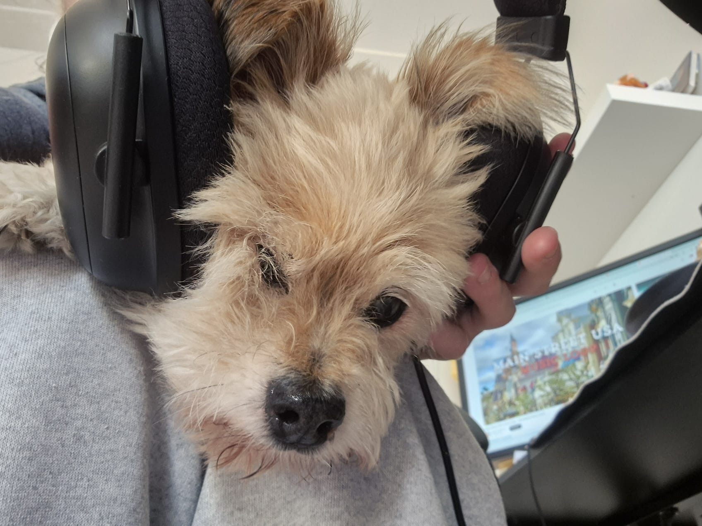
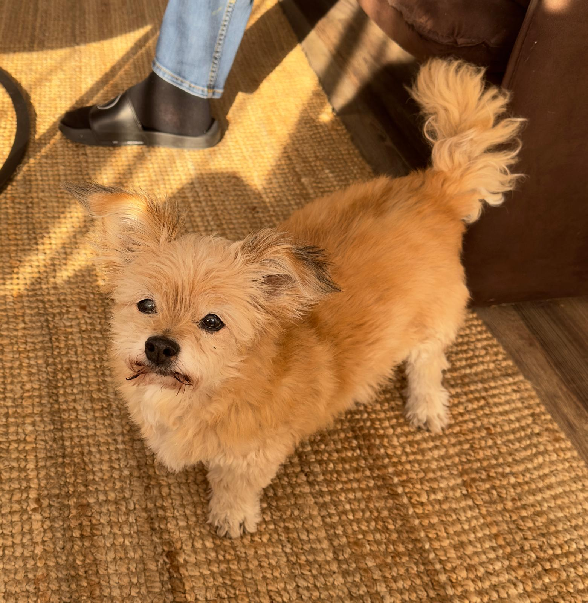

Over Boomie
Boomie de Hond, vaak liefkozend Hert genoemd, is een vrolijke en energieke hond
die altijd in is voor wat lekkers.
Zijn grootste passie is eten, en hij kan geen enkele
snack weerstaan. Een van zijn meest opvallende kenmerken is
zijn altijd hangende
tong, wat hem een schattig en herkenbaar uiterlijk geeft. Zijn speelse
persoonlijkheid en
unieke uiterlijk maken hem tot een echte hartendief!

Schooiend Hert
